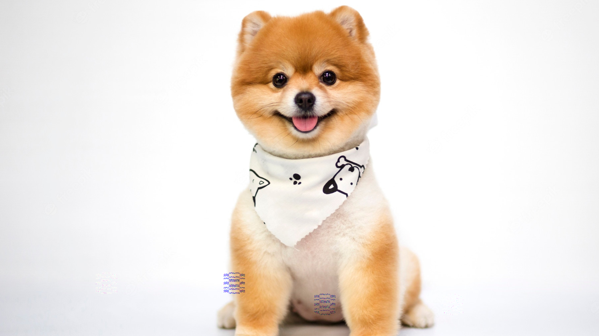
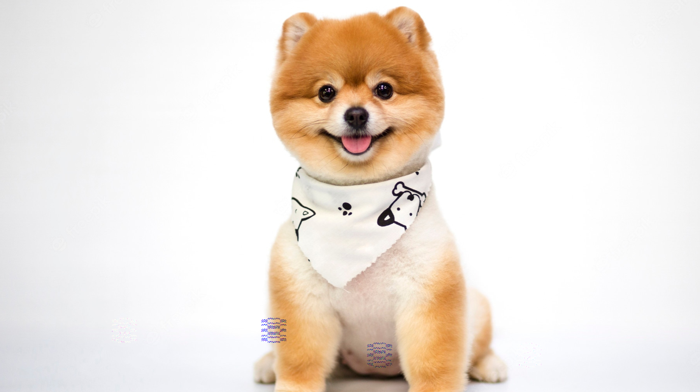

Adote um animal
A adoção é um ato de amor e de responsabilidade. O resultado é uma vida repleta de alegria, amor e gratidão. Para adotar, você precisa ter plena consciência de que está acolhendo uma vida que dependerá sempre de seus cuidados.
Seja um lar provisório
Caso não possa acolher definitivamente com um animalzinho de estimação você pode servir como lar provisório, ou seja, abrigá-lo temporariamente até que ele seja adotado. Envie um e-mail para contato@meusite.org.br que daremos instruções para você.


COMO AJUDAR
Seja um voluntário!
Fazer o bem é um dos privilégios que a vida nos dá a chance. A troca e a sensação de fazer algo para mudar o mundo é recompensadora. Temos espaços para todas as áreas! Você pode participar dos bazares, ajudar com tratamento veterinário e até com a parte audiovisual. Preencha o formulário e aguarde nosso contato! Temos certeza que você vai poder nos ajudar em algo!
Seja um lar provisório
Caso não possa acolher definitivamente com um animalzinho de estimação você pode servir como lar provisório, ou seja, abrigá-lo temporariamente até que ele seja adotado. Envie um e-mail para contato@meusite.org.br que daremos instruções para você.
Apadrinhe um animal
Se você quer ajudar um animal, mas não pode adotar, apadrinhar é uma ótima ideia! Muitos animais são resgatados velhos, doentes ou precisam de cuidados especiais. Você pode ser padrinho ou madrinha e ajudar com uma contribuição mensal. Independentemente do valor, ajuda muito a continuarmos nosso trabalho!
Adote um animal
A adoção é um ato de amor e de responsabilidade. O resultado é uma vida repleta de alegria, amor e gratidão. Para adotar, você precisa ter plena consciência de que está acolhendo uma vida que dependerá sempre de seus cuidados.
Doe:
Você pode fazer doações únicas ou mensais para a MEU SITE ANIMAL contribuindo para as campanhas, projetos e nossos animais amparados!
As doações podem ser feitas por depósito bancário.
Meu site animal
CNPJ: 12.791.298/0001-84
Banco Itaú
Ag. 3130
Como adotar
A adoção de animais é uma forma de contribuir para que este quadro triste se reverta. Contudo a adoção dever
ser responsável, com consciência das necessidades e direitos do animal a ser adotado:
1 – A família toda deve consentir, respeitar e, se possível, colaborar para cuidar do novo ente da casa. Se todos
dividirem as tarefas no trato do animal ele estará muito bem acolhido.
2 – Esteja ciente dos custos. Os animais precisam de ração e água à disposição, de um espaço adequado para
brincar, não devem ser acorrentados e precisam regularmente de atendimento veterinário.
3 – Não procrie seu animal. A castração é um ato de amor, ela contribui para o controle populacional dos
animais, auxilia no comportamento, evita fugas, doenças como câncer e piometra, acaba com disputa territorial,
brigas e xixi fora do lugar.
4 – Animais não são descartáveis. Quando for tirar férias, providencie algum lugar para seu amigo ficar ou
alguém que vá até a sua casa para cuidar dele. Existem muitos hotéis pets e cuidadores para te ajudar. Além
disso, caso mude de país, cheque a legislação. A maioria dos lugares permitem a entrada de animais
domésticos com seus donos e as companhias aéreas fazem esse transporte regularmente.
5 – Gatos precisam de proteção dobrada. Telas e redes de proteção são indispensáveis para que o animal não
caia. Além disso, não permita as “voltinhas noturnas”. O animal pode procriar, ser envenenado, se perder ou ser
atropelado.
6 – Em caso de cães, passeios são imprescindíveis e devem ser feitos antes das 10h e depois das 16h, ou o sol
pode queimar suas patinhas. Lembre-se, as necessidades do animal devem ser recolhidas.
7 – Eduque de forma carinhosa seu animal. É necessário impor limites, conforme orientação do veterinário
responsável, de forma firme, mas nunca cruel. Lembre-se, filhotes requerem atenção dobrada. Nessa fase de
desenvolvimento, é preciso paciência dobrada.